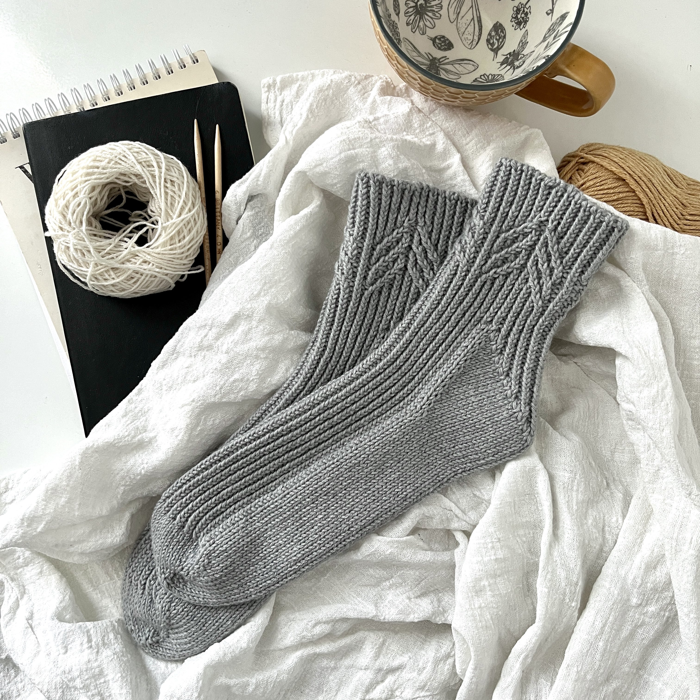
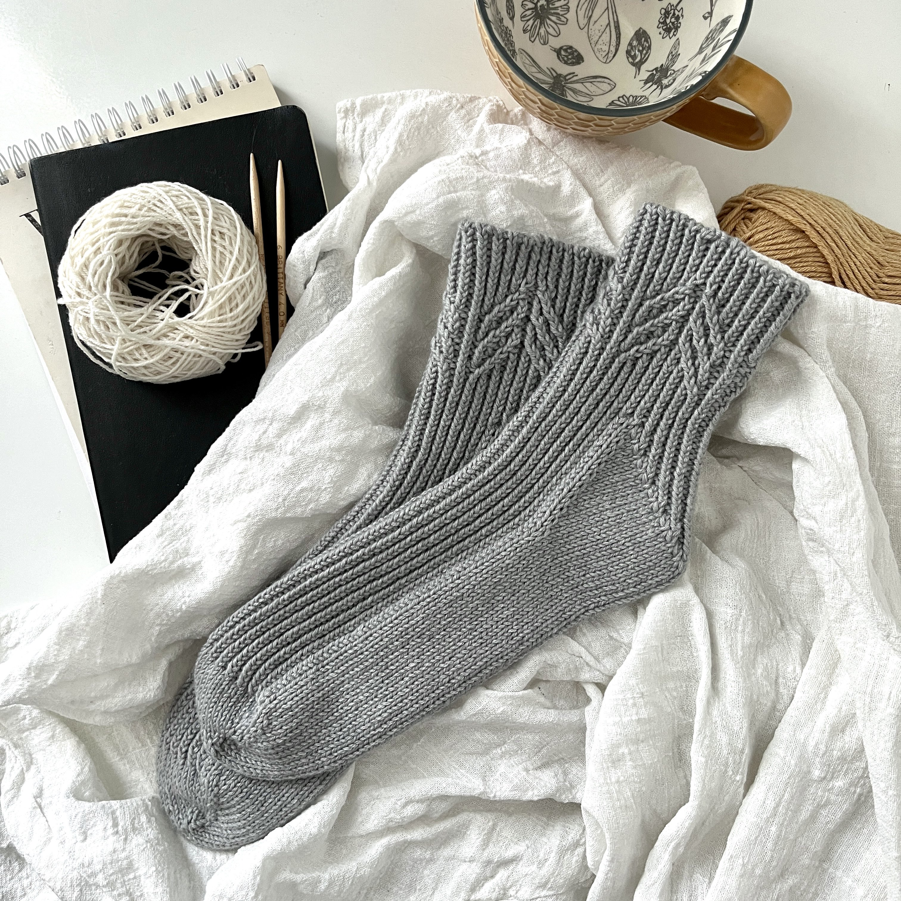

After I, droqen, made a website extolling the many virtues of
S O C K & S O C K 2, you know what Shelley said to me? Well, I don't either but it was something like
"I don't care, make another website like that other one."
So I did.
Several months after the advent of the first two
S O C Ks, Shelley went out and purchased some new yarn from
The Knitting Loft and got to work. Six thousand, five hundred and eighty-six stitches later, she had produced this perfectly mundane majesty of yarnwork: S O C K 3.
 
